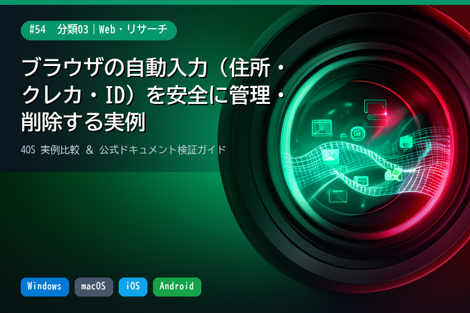

#54｜分類03: 情報収集・リサーチ・Web利用 2026-11-24

ブラウザの自動入力（住所・クレカ・ID）を安全に管理・削除する実例｜Windows・macOS・iOS・Android
「ネットショッピングやWebサービスの利用で、毎回パスワードや住所を入力するのは面倒だけど、自動入力に情報を預けるのはセキュリティ的に不安……」そんな悩みをお持ちではありませんか？
便利なオートフィル（自動入力）機能は、利便性を高める一方で、適切に管理・削除を行わなければ情報漏洩のリスクを伴います。この記事では、Windows、macOS、iOS、Androidの主要4OSにおいて、ブラウザの自動入力情報をどのように安全に管理し、不要な情報を正しく削除するのか、具体的な操作手順を徹底解説します。
この記事を読めば、各デバイスの標準機能を使いこなし、自分のプライバシーを守りながら快適なWeb利用ができるようになります。
4OS比較早見表
| OS / ブラウザ | 主要な管理機能 | 同期アカウント | セキュリティ認証 | 特徴 |
|---|---|---|---|---|
| Windows (Edge/Chrome) | ブラウザ内蔵マネージャー | Microsoft / Google | Windowsログイン等 | 複数ブラウザの使い分けに注意が必要 |
| macOS (Safari/Chrome) | iCloudキーチェーン / Google | Apple ID / Google | Touch ID / パスコード | Apple製品間での強力な同期が強み |
| iOS (iPhone/iPad) | 設定アプリ（パスワード） | Apple ID | Face ID / Touch ID | システムレベルでの統一管理が特徴 |
| Android (Chrome等) | Googleパスワードマネージャー | 画面ロック / 指紋 | Googleアカウントとの密接な連携 |
1. Windows 11 での実例手順（Edge / Chrome）
Windows環境では、利用するブラウザによって管理画面の階層が異なります。特にMicrosoft EdgeとGoogle Chromeを併用している場合は、それぞれの設定を確認する必要があります。
【手順】設定と同期の操作
■ Microsoft Edgeの場合
1. ブラウザ右上の「…」メニューから 設定 を開く。
2. 左メニューの プロファイル ＞ サインインしてデータを保存する を選択。
3. Microsoftアカウントでログインし、パスワードや支払い情報の同期をオンにする。
4. 個別削除: アドレスバー右側の「鍵アイコン」をクリックするか、設定内の 自動入力された情報を見る から対象項目を選択して削除します。
■ Google Chromeの場合
1. 右上の「三点リーダー」から 設定 を開く。
2. 左メニューの パスワードと支払い方法 を選択。
3. 下部の「Googleに保存された情報をバックアップする」をオンにする（Googleアカウントへのログインが必要）。
4. カード情報の扱い: クレカ情報は、標準機能では入力時に保存されることがありますが、セキュリティの観点からVisa/Mastercard公式アプリ等の外部サービス連携が推奨されることも多いです。削除は 支払い方法 セクションから行います。
【制限事項】
Windows 10/11共通で、EdgeとChromeは互換性は高いものの、「設定」メニューの階層や名称が異なるため注意が必要です。また、ローカル保存のみでは他OSとの同期はできないため、必ずクラウドアカウントへのログインが必須となります。
【トラブルシューティング】
- 「鍵アイコン」が表示されない・グレーアウトする場合
- 原因: サイトがHTTPSを使用していない、またはAdBlock等の拡張機能が干渉している。
- 解決策: URLに
https://が付いているか確認し、不要なアドオンを一時的に無効化してください。 - 「同期」ボタンを押してもデータが反映されない
- 原因: 別のPCでログインしているアカウントと異なる、またはセッション期限切れ。
- 解決策: ブラウザを再起動し、公式サイトから再度パスワードリセット等を行い、正しいアカウントでサインインしているか確認してください。
- 誤って保存された情報を削除したいがリストが見つからない
- 原因: 別のブラウザ（例：Firefox）で入力した情報をChromeで探している。
- 解決策: 入力を行ったそのブラウザの「自動入力された情報を見る」画面へ直接アクセスしてください。
2. macOS での実例手順（Safari / Chrome）
macOSでは、Apple独自の「iCloudキーチェーン」とGoogleの同期機能の使い分けがポイントです。
【手順】設定と同期の操作
■ Safariブラウザの場合
1. システム設定 ＞ インターネットアカウント でiCloudキーチェーンを有効化。
2. ブラウザ内メニューバーの「編集」＞「すべてのパスワードを表示」から管理画面へ移動（MacのユーザーパスコードまたはTouch IDが必要です）。
3. 個別削除: リストから対象を選択し、削除ボタンを押します。
■ Google Chromeの場合
1. 設定 ＞ GoogleアカウントをChromeに追加 で同期を設定。
2. 手順はWindows版と同様ですが、UIデザインがSafariと異なる点に注意してください。
【制限事項】
SafariのiCloudキーチェーンはAppleのエコシステム内でのみ強力に動作し、AndroidやWindowsとの同期はできません。また、セキュリティ強化のため、パスワードマネージャー操作のたびにTouch ID等の認証を求められるため、頻繁な操作には慣れが必要です。
【トラブルシューティング】
- 「すべてのパスワードを表示」が反応しない
- 原因: システム設定で「キーチェーンアクセス」のロック状態になっているか、認証デバイスが未登録。
- 解決策:
システム設定＞プライバシーとセキュリティでSafariやKeychain Accessへの認証要求を再確認してください。 - iCloudキーチェーンの同期が止まっている
- 原因: Apple IDのセッション切れ、またはiCloud Driveがオフ。
- 解決策:
システム設定＞Apple ID (iCloud)で「パスワードとキー」項目を一度オフにしてから再度オンに切り替えてください。
3. iOS（iPhone / iPad）での実例手順（Safari）
iOSでは、ブラウザのアプリ内設定よりも、システム全体の「設定」アプリから管理するスタイルが標準です。
【手順】設定と同期の操作
■ Safariブラウザの場合
1. iPhone/iPadの 設定 アプリを開く。
2. パスワード をタップし、Face ID / Touch ID またはパスコードで認証。
3. 保存されたリストから対象をタップし、「このサイトとパスワードを消す」を選択。
■ Google Chromeの場合
1. Chromeアプリ内の 設定 ＞ Googleアカウント で同期を設定。
2. 注意: iOSのシステム「パスワード」画面からはChromeのデータは見えません。ブラウザごとに独立した管理となります。
【制限事項】
iOSでは、Apple IDに紐付いた統一管理窓口が「設定」アプリ内にあり、サードパーティ製ブラウザ（Chrome等）のデータはそこには表示されません。データの所在を混同しないよう注意が必要です。
【トラブルシューティング】
- 「パスワード」画面でリストが見つからない
- 原因: Apple IDの同期がオフになっている。
- 解決策:
設定＞名前＞iCloudで「パスワードとキーチェーン」をオンにしてください。 - Face ID/Touch ID が毎回求められすぎる
- 原因: セキュリティポリシーによる正常動作ですが、通知設定等で挙動が変わる場合があります。
- 解決策:
設定＞パスワード上部のオプションを確認してください（ただし、セキュリティ上、完全に無効化することは推奨されません）。
4. Android での実例手順（Chrome）
AndroidではGoogleアカウントとの密接な連携が基本となります。
【手順】設定と同期の操作
■ Google Chromeの場合
1. ブラウザ右上の「三点リーダー」＞ 保存されたパスワード を選択。
2. Googleアカウントへのログインおよび同期を有効化する。
3. 個別削除: リストから対象をタップし、「このサイトとパスワードを消す」を選択。
■ Samsung Internet / Firefox など
1. メーカー固有のブラウザ（Samsung Internet等）では、メニュー階層が異なります。
2. 例：Samsung Internetは 三点リーダー ＞ オプション ＞ 保存されたデータ となることが多いです。
【制限事項】
Android版ChromeではGoogleアカウントに同期しない限り、他デバイスとの共有は不可能です。また、PixelやGalaxyなどメーカー固有のブラウザでは標準パスワードマネージャーが存在しない場合があるため、その場合はChromeの使用を推奨します。
【トラブルシューティング】
- 「保存されたパスワード」ボタンが表示されない
- 原因: Googleアカウントにログインしていない、または同期が無効。
- 解決策: Chromeの同期設定を確認し、Googleアカウントへのサインインを再試行してください。
- 機種によってメニューの名前が違う
- 原因: Pixel（Stock Android）とSamsung（OneUI）で「設定」項目の名称が異なるため。
- 解決策: 自分の端末のメーカー固有の用語を確認するか、汎用性の高いChromeを使用してください。
よくあるトラブルと解決チェックリスト
| エラー・事象 | 原因の可能性 | 対処法 |
|---|---|---|
| 自動入力が反応しない | サイトがHTTPSではない / アドオンの干渉 | URLを確認し、AdBlock等の拡張機能を一時オフにする |
| 同期データが反映されない | 別のアカウントでログイン中 / セッション切れ | ブラウザを再起動し、正しいアカウントでのサインインを確認 |
| 削除したい項目が見つからない | 別のブラウザで入力した情報を探している | 入力に使用した特定のブラウザの設定画面へ直接アクセスする |
| 認証（Face ID等）が通らない | システム設定の不備 / セッション切れ | OS側の「パスワード」設定から、デバイスの認証設定を再登録する |
まとめ：快適なマルチOS環境を作るポイント
ブラウザの自動入力管理は、単に「便利にする」だけでなく、「いかに安全に情報を守るか」という視点が重要です。各OSの標準機能を正しく理解し、定期的に不要なカード情報や古いパスワードを削除する習慣をつけましょう。
また、より安全で快適なマルチOS環境を構築するために、以下の周辺機器やツールの導入も検討してみてください。
- VPNサービス: 公共Wi-Fiなどでのブラウザ利用時、通信を暗号化して情報の盗聴を防ぎます。
- トラックボールマウス: 長時間のWebリサーチや設定操作において、手首の負担を軽減し、正確なクリック操作をサポートします。
- ブルーライトカット眼鏡: 集中して情報を収集する際、目の疲れを抑えて快適な作業環境を提供します。
これらのツールと正しいOS知識を組み合わせることで、セキュリティと利便性を両立した理想的なデジタルライフを実現しましょう。
参考文献・公式ドキュメント（一次情報ソース）
本記事の手順・仕様は以下の各OSおよびツールの公式ドキュメントに基づいています。OSアップデートによりメニュー名称や挙動が変わる場合があるため、最新仕様の確認にもご活用ください。
- [Windows] Snipping Tool を使ってスクリーンショットをキャプチャする・画面録画する - Microsoft サポート
- [macOS] Macでスクリーンショットを撮る - Apple サポート (日本)
- [macOS] Macで画面を収録する方法 - Apple サポート (日本)
- [iOS] iPhoneでスクリーンショットを撮る（フルページ保存を含む） - Apple サポート (日本)
- [iOS] iPhone、iPad、iPod touchで画面を録画する - Apple サポート (日本)
- [Android] Android デバイスで画面の画像（スクリーンショット）または動画を撮影する - Android ヘルプ